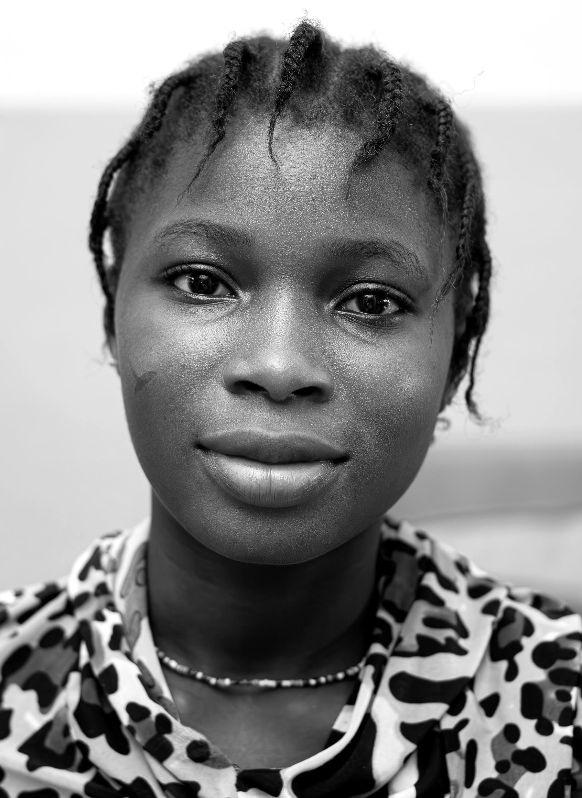
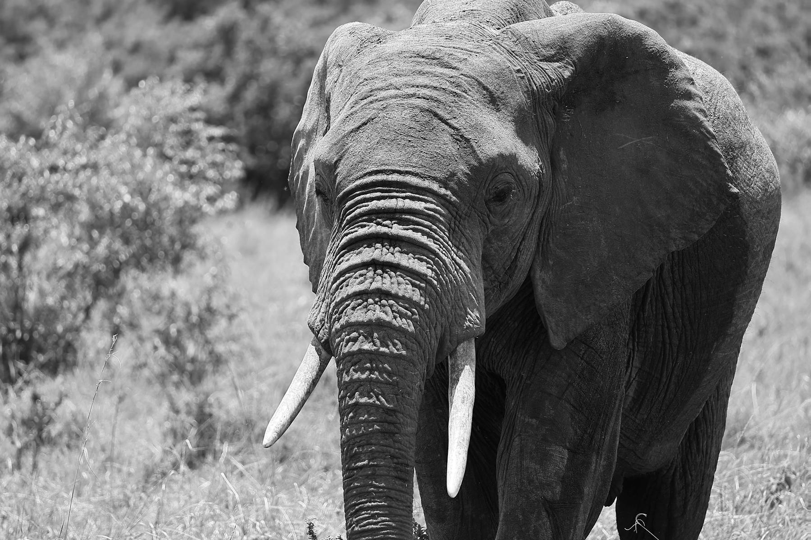

Selected Work
Kenyan story packages built for final media.
These are finished editorial packages, reported, produced, and
structured for publication in print, digital, and broadcast. Each
started with a single story brief and a Kenyan community that
deserved proper coverage.
Work
Civic investigations
Climate field packages
Market trackers
Justice and health reporting
Visual essays from the ground
Selected Packages
Six story packages. Six Kenyan realities.
These packages were developed from real editorial briefs. Each one
maps directly to a story lane that a Kenyan newsroom could assign
today. The image direction is specific, the sources are named, and
the timestamps are real.

Civic Desk
"Tutawaona": the Finance Bill generation and how they rewrote Kenyan civic life.
On June 25, 2024, thousands of young Kenyans stormed parliament. This package traces the WhatsApp threads, TikTok explainers, X coordination, and street organisation behind #RejectFinanceBill2024.
NairobiParliamentLong-formShortsPhoto essay

Climate
Maji iliua. Then the government disappeared. A Kamuchiri follow-up report.
The Mai Mahiu landslide killed at least 60 people in April 2024. This package revisits Kamuchiri three months on: compensation, land titles, tent schools, and disaster funds.
Nakuru CountyField videoData mapsCommunity voices

Bazaar
The unga index: what Gikomba tells you that the KNBS will not.
Kenya's official inflation data is real, but it does not shop at the same markets as most Kenyans. This package tracks the actual household basket across six markets.
MarketsWeekly dataPhotographyKiswahili audio

Health
SHA inakataa: why hospitals are turning away registered patients at the gate.
Kenya replaced NHIF with the Social Health Authority. This package maps rejection hotspots, profiles patients, and explains beneficiary rights in plain Kiswahili.
NationalDocument investigationPatient profilesExplainer

Justice
Sio statistics. Ni watu: the 2024 femicide report Kenya's newsrooms did not write.
Ninety-seven women were killed in Kenya in 2024. This package names every woman, maps every case, and follows the justice system's slow movement.
National9 countiesDataFamily interviewsLong-form

Environment
The Mara makes billions. Who in the community sees the money?
The Maasai Mara generates major tourism revenue. Cinq spent three weeks in Narok County following families, beadwork cooperatives, rangers, and levy decisions.
Narok CountyTourism economyCommunity voicesPhotography
What You Receive
What a finished Cinq package includes.
Every delivery is documented, formatted, and handed over with enough
context for the next editor to take the story forward without
calling us to ask where the files are.
Main Asset
Primary story
Long-form article, photo essay, podcast episode, short documentary, or data report with copy sub-edited and media credited.
Platform Edits
Reach pack
Social cuts, pull quote cards, caption sets, Kiswahili summaries, and vertical-format versions for the platforms that matter.
Source Library
Archive handoff
Transcripts, background documents, verified data sets, image selects with metadata, and notes for the next reporter.